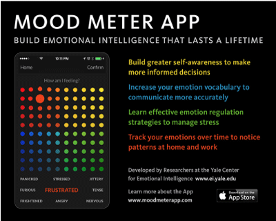
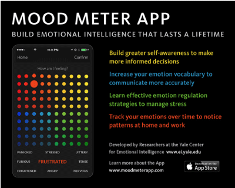

Similar Mood Meter Application
Topic has changed to Emotion Monitor from Natural Resource History. See other examples below. For more information see the "Proposal Draft" tab on the main portal page.
Mood Meter Application
Mood Meter Application
Topic has changed to Emotion Monitor from Natural Resource History. See other examples below. For more information see the "Proposal Draft" tab on the main portal page.
